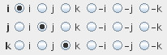

COORDINATE PERMUTATION/MIRRORING
The module permutes or mirrors field indices.
Input data
The input field is regular.
Output field
The output field is regular.
Computation parameters

The user determines permutation and mirroring of i,j, (k) indices in three rows with radio buttons.
Note: the field appears to be unchanged as the module permutes only field indices. To see the changes, use the Regular field slice module. The module is designed to facilitate value-by value comparison of two similar but differently indexed fields by the use of combine components or component calculator module.